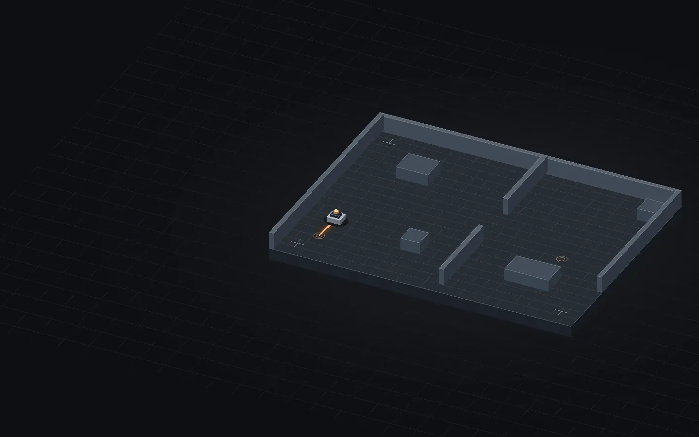
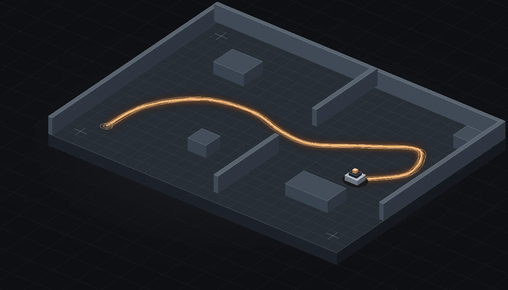

Internal support chatbot
AI assistant that answers internal support questions from company knowledge, using retrieval-augmented generation with semantic search and Datadog monitoring.

AI & software engineer
I build AI agents, robotics tooling, and the production software that connects them.
Explore my workFleet UI / Route recording
In Fleet UI, researchers can describe navigation experiments in plain language and run them on a simulated robot fleet.
Fleet UI / Repeatability
The recorded route was reproduced ten times in simulation, with a mean RMSE of 3.35 cm.
Explore Fleet UIFeatured project · Robotics research
LLM agents for repeatable autonomous navigation experiments on simulated robot fleets.

Built during my master's research at CIn-UFPE, Fleet UI brings mission planning, navigation and telemetry into a single research workflow.
AI applications and operational software built around real workflows.
AI assistant that answers internal support questions from company knowledge, using retrieval-augmented generation with semantic search and Datadog monitoring.
Companion system to Fleet UI that orchestrates robot-fleet missions written in Portuguese. Uses SimFleet today, with a contract toward TurtleBot4. Features a Control Center, a localhost-only API reached over SSH tunnel, and a planner that can be deterministic or use a local LLM via an OpenAI-compatible adapter (Ollama, qwen2.5:3b).
View on GitHubVertical ERP for industrial electrical maintenance with 10+ modules, used by about 10 people: quotes with per-invoice taxes, work orders, electrical tests, technical reports, billing and finance.
Reconfigurable testbed where mobile robots carry Mesh routers while Raspberry Pi Zero 2 W boards collect signal, handover and latency data. Published at SBES 2025.
Read the paperWebsite presenting the services and venue of a cultural space in Recife, with a responsive interface focused on usability.
Visit the siteTicketing and management system for a museum: sales, free admissions, group visits, role-based access and reports exported to Excel and CSV.
Online store with catalog, cart, orders and an admin panel, with Mercado Pago payments and shipping quotes by postal code. Current implementation in Node.js/Express with Prisma and MySQL, hosted on Hostinger.
Visit the siteModeled school performance across ~5,500 Brazilian municipalities (SAEB) with logistic regression and decision trees, turning results into rules education managers can act on.
Based in Recife, Brazil
I work across AI, robotics, and full-stack engineering. I’ve shipped ERPs, intranets, APIs, and data pipelines alongside research on autonomous navigation and multi-robot systems.
Mobile Robotics for Throughput Testing in a Reconfigurable Test EnvironmentEduardo Araújo and Breno Miranda · SBES 2025
For AI engineering roles, software projects, or research collaborations.
wanderley.eduardo@gmail.com